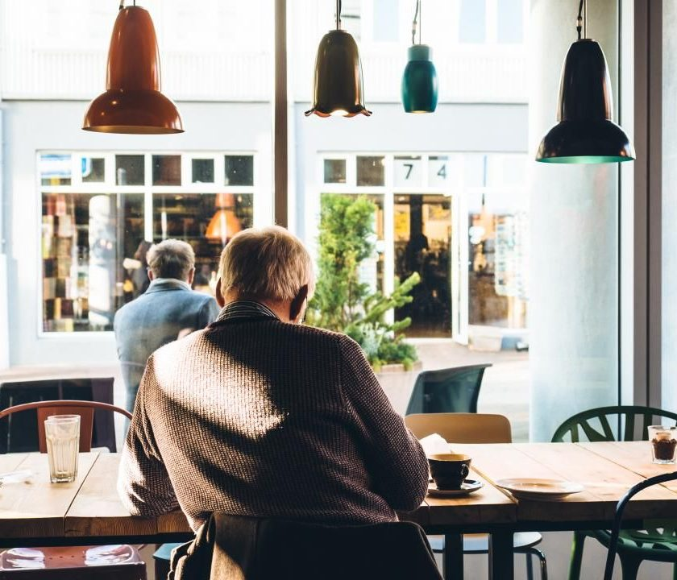
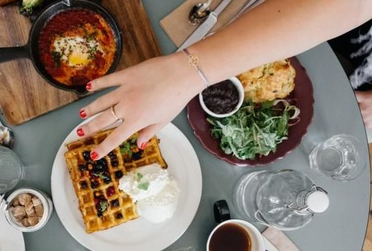

Deniz Nadide Duru Breakfast · Moda

Caferağa'da, Gürbüztürk Sokağı'nda kahvaltı ve kahve. Sofradan kalkınca Moda'nın sokakları ve sahili sizi bekliyor.
4,8 1.157 Google yorumuUfuktaki güneş, bugünkü açık saatlerimize göre yükselir.
Her günün kendi ufku var
Saatlerimiz güne göre değişiyor: Salıdan Pazara 10:00'da açıyoruz. Çarşamba 16:00'da, diğer günler 17:00'de kapanıyoruz. Pazartesi kapalıyız.
Şeritte bir güne dokunun; o gün için yer talebi formu, gün seçili olarak açılır. Kişi sayısını ve saati seçtikten sonra mesajınız WhatsApp'a hazır gelir.
Gün içinde turuncu nokta, saatin şu an nerede olduğunu gösterir. Çarşamba çubuğunun bir saat kısa olduğuna dikkat.
- Pazartesikapalı günKapalı
- Salıher hafta
- Çarşambaher hafta
- Perşembeher hafta
- Cumaher hafta
- Cumartesiher hafta
- Pazarher hafta

Temsili görselSofraya neler gelir?
Klasik bir kahvaltı sofrasının tanıdık tatları: peynirler ve zeytinler, bal ile kaymak, sıcak yumurtalar, demli çay. O gün sofrada neler olduğunu sormak için WhatsApp'tan yazmanız yeterli.
- Serpme kahvaltıOrtaya kurulan, paylaşmalık küçük tabaklar.
- Kahvaltı tabağıTek kişilik, her şeyden biraz; içeriğini sorun.
- Yumurtalar ve sıcaklarSahanda, menemen, omlet; günün sıcaklarını sorun.
- Kahve, çay ve tatlıEspresso bazlı kahveler, demli çay, yanına tatlılar.
Kahvaltıdan sonra Moda
Sofradan kalkınca semtin klasik rotaları sizi bekliyor. Kendi sabah planınızı Moda sayfasında, durak durak çizebilirsiniz.
- Duru'da kahvaltıGürbüztürk Sokağı, No:29/B. Çayınızı tazeleyip yola koyulun.
- Moda SahiliDeniz kıyısında yürüyüş, çimlerde mola ve karşı kıyıda Tarihi Yarımada silüeti.
- Moda CaddesiDükkânlar, kafeler ve vitrinlerle dolu, yavaş yürümelik bir cadde.
- Kadıköy ÇarşısıBalıkçılar, kuruyemişçiler ve baharatçılar; eve bir şeyler almak için.
Sık sorulanlar
Rezervasyon yapılıyor mu?
Yer talebinizi WhatsApp'tan iletebilirsiniz; gün, saat ve kişi sayısını yazmanız yeterli. Rezervasyon sayfasındaki form bu mesajı sizin için hazırlar. Uygunluk, işletmenin yanıtıyla netleşir.
Menüyü nereden görebilirim?
Güncel menüyü WhatsApp'tan isteyebilir ya da Instagram'da @deniznadidedurubreakfast hesabına göz atabilirsiniz.
Pazartesi açık mısınız?
Hayır, Pazartesi kapalıyız. Salı ve Perşembe–Pazar 10:00–17:00, Çarşamba 10:00–16:00 arası açığız.
Kalabalık bir grupla gelebilir miyiz?
Doğum günü, aile ya da arkadaş buluşması için kişi sayısını ve saati yazın, bilgi verelim. Kalabalık gruplarda birkaç gün önceden yazmak planlamayı kolaylaştırır.
Nasıl gelirim?
Adresimiz Caferağa, Gürbüztürk Sok. No:29/B, Kadıköy. Vapur, metro ve Moda tramvayıyla ulaşım seçeneklerini İletişim sayfasında bulabilirsiniz.
Bir sabah uğrayın
Gürbüztürk Sokağı, No:29/B
Caferağa, 34710 Kadıköy/İstanbul. Salıdan Pazara kapımız 10:00'da açılır.
- PazartesiKapalı
- Salı10:00–17:00
- Çarşamba10:00–16:00
- Perşembe10:00–17:00
- Cuma10:00–17:00
- Cumartesi10:00–17:00
- Pazar10:00–17:00